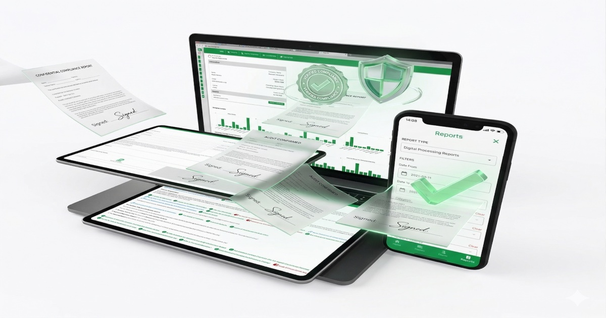

CLEARER EMPLOYEE RELATIONS.
STRONGER ACCOUNTABILITY.
Digital case management and guided employment-relations processes for modern organisations
Selected organisations using ERGuide
Woolworths, Capitec Bank, Discovery, TFG Group, Hungry Lion, Capfin, King Price Insurance, PEPKOR Payments & Lending and Tenacity.


Complex labour law is difficult to manage when processes and information are scattered.
The cost of getting an employment-relations process wrong can be high, both financially and operationally.
Complex labour law
Legal requirements, case law and internal policies can be difficult to interpret in day-to-day situations.
Processes and information get messy
Forms, evidence, emails and updates often sit in different places, leaving managers unsure about the next step.
Non-compliance can be costly
Inconsistent or poorly documented processes can lead to disputes, delays and avoidable cost.
ERGuide makes complex ER processes easier to follow.
Clear guidance and digital case records help teams work more efficiently and apply a more consistent process.
Simple to use
Clear enough for anyone responsible for an ER matter to understand and use in day-to-day work.
SimpleEfficient and consistent
Guided steps reduce delays and help teams follow the same process across the organisation.
ConsistencyBuilt for South African law
Content and workflows are designed around South African employment-relations requirements.
South AfricaExpanded for African organisations
ERGuide can be configured for the legal and policy context of teams operating elsewhere in Africa.
AfricaSupport for the ER work your team handles every day
ERGuide combines guided processes, digital records and practical search tools across the matters that need careful handling.
Misconduct
Run a standardised disciplinary process that supports consistent conduct decisions and procedural fairness across the organisation.
ConductIncapacity: poor performance
Document expectations, support and review steps within reasonable timeframes. Keep the information together so the next workplace decision is easier to make and explain.
PerformancePlatform guides and search
Follow visual guides that set out legal principles in a practical sequence. Checklists, added context and search help managers find relevant guidance quickly.
GuidanceIncapacity: incompatibility
Handle situations where an employee struggles to work effectively within a team or workplace culture through a structured process informed by the Code of Good Practice: Dismissal.
IncompatibilityGrievances
Give employees a clear route for raising concerns through the appropriate management levels. Track each step, response and outcome in one documented record.
ResolutionIncapacity: ill health
Guide temporary and permanent ill-health cases through a fair, sensitive process. Keep consultation notes, supporting information and decisions together throughout the case.
Ill healthHarassment complaints
Let employees submit complaints informally or formally, including through a QR code entry point. Keep the process accessible while recording how each complaint is handled.
ComplaintsOperational requirements
Manage consultation steps, supporting information and decisions within a clear timeframe. Keep the record needed to understand how the process progressed and what happens next.
ConsultationCritical ER processes, current data and practical guidance in one place
ERGuide Online supports the employment-relations work teams deal with most often. It captures information as work happens and turns the case record into useful status and reporting data.
Digital guidance
Access company forms and guided processes for misconduct, incapacity, operational requirements and grievances. Capture actions as they happen so each case has a consistent digital record.
Practical process support
Follow clear procedural steps informed by the Code of Good Practice: Dismissal. A documented process helps reduce inconsistency and avoid unnecessary disputes.
Current data and insight
See case information and reporting on your device, so HR/ER can spot delays, follow up sooner and make decisions from the same record.

A modular, mobile-first system for day-to-day ER work
ERGuide turns complex HR and employment-relations processes into clear steps, supported by current information, digital records and practical guidance.
From the right guidance to a complete case record
Less searching. Fewer handoffs. One clear record from the first step to reporting.
-
01
Find
Search the relevant guidance and policy.
-
02
Start
Open the right form and guided process.
-
03
Capture
Build the case record by capturing actions, evidence and signatures as they happen.
-
04
Track
See ownership, progress and the next step.
-
05
Report
Use the complete record for management insight.
Powerful, instant search
Find relevant guidance in seconds. Search across documents, legal principles and approved company policies for information that fits the matter in front of you.
Step-by-step guidance
Follow clear how-to and what-to-do instructions, supported by visuals, checklists and model examples.
Content kept current
Guidance is maintained as legislation, case law, country requirements and company policies change.
Supporting detail in context
Open concise supporting information when you need it, without losing your place in the process.
Capture work as it happens
Record actions and supporting information while the work is happening, whether you are at a desk or on the move.
Digital signing and storage
Use electronic signatures and keep records and evidence together in the case file, creating a clear audit trail.
Status tracking and reporting
Track each ER process and create professional reports from the same digital record.
Customisable templates
Use electronic forms that reflect your brand, policies and procedures, helping teams follow a consistent approach.
Start with what you need
Start with the processes you need now, then add modules as your organisation grows or requirements change.
ER guidance and case records wherever your managers need them
Give managers access to a mobile-friendly platform for disciplinary, incapacity and other ER processes, available when and where the work happens.
Mobile-friendly access
Open guidance, forms and case information on a phone, tablet or desktop without changing the way the process works.
Available 24/7
Access ERGuide online whenever a manager needs to check guidance, capture an action or review a case.
Consistent across teams
Give managers the same guided steps and templates across locations, tailored to your employment-relations practices.